| 응모작 제목 | 데이터 기반 21시 이후 소비 릴레이 '안동 이어드림': 원도심에서 월영교로 |
|---|---|
| 활용 데이터 · 데이터랩(필수) | 지역별 관광 현황(외지인 방문자 요일·시간대, 읍면동 방문자), 신용카드 관광소비(업종별), 숙박 현황(평균 숙박일수), 중심-연관 관광지, 내비게이션 목적지 검색, 야간관광 현황, 축제 현황 |
| 활용 데이터 · 타분야(선택) | 코레일 안동역 시간대별 승하차(2024.1~2026.8), 한국철도공사 8대 도시 가명결합 분석(2022), 소상공인 상가정보(2026.6), 안동시 디지털관광주민증 혜택업체·이용 건수(정보공개청구), 안동시 버스정보시스템 시간표, 관광객 온라인 설문(103명, 2026.9), 월영교 현장 실태 조사 |
| 성과분야 | 전략수립 및 기획 ■ · 상품 및 서비스 개발·개선 ■ |
| 핵심성과 | 데이터랩 기반의 '안동 이어드림' 3단계 야간 릴레이 개발로 안동시 방문당 체험·문화 소비 3.5% 증가(전국 대비 감소폭 20% 회복) 및 연간 추가 소비 1.56억 원 창출 예측 |
| 계량성과 | 온라인 설문조사 103명 실시(안동 방문 경험자 72명 중 체험 할인 쿠폰 이용 의향 79.2%[57명], 야간 셔틀 이용 의향 79.2%[57명], 월영교 야간 팝업 방문 의향 81.9%[59명] 확인) |
방문 1회당
체험·문화 소비
2024 → 2026년 1~8월
−16.8%
183.5원 → 152.7원
원도심 주민증
혜택 업체
외지인 방문 1위 중구동(12.5%)
0개소
방문 1위 구역에 혜택 없음
원도심 → 월영교
시내버스
19시 이후 출발
0회
112번 막차 18:45
월영교 1km
21시 이후 식사
영업 음식점 16곳 중
3곳
주점 0곳
외지인
방문 연인원
2024 → 2026년 1~8월
+5.6%
방문은 늘었다
방문 1회당
체험·문화 소비
참여 2% (기준)
+3.5%
152.7원 → 158.0원
원도심 혜택
가맹점
원도심 관광식당
83개소
0개소 → 83개소 · 인증 월 5,452건
주말 저녁
월영교 유입
주말 하루
+110명
야간 팝업 이용 128명
연간 순수
추가 소비
참여 2% (기준)
+1.56억 원
참여 10% 시 6.91억 원
시범 운영
효과 확인 확률
식당 83곳 · 5개월
85%
체험 결제 +50%일 때
| 단계 | 무엇을 | 언제 | 어떻게 | 지금 (근거) |
|---|---|---|---|---|
| 1단계 | 원도심 식사 → 체험 | 낮 · 식사 뒤 | 원도심 관광식당 83개소 영수증 인증 → 체험 10% 할인 | 원도심 주민증 혜택 업체 0개소 |
| 2단계 | 원도심 → 월영교 이동 | 18:30 ~ 21:00 | 관광택시 저녁 배치 · 수요대응형 셔틀 | 19시 이후 원도심 출발 112번 0회 |
| 3단계 | 월영교 야간 소비 | 21시 전후 | 문보트 할인 · 월영야행 부지 팝업스토어 | 월영교 1km 주점 0곳 |
방문객은 늘었는데, 체험·문화 소비는 줄고 있다
○ 방문 1회당 체험 소비액 -16.8% 급감, 원도심 주민증 혜택업체 0개소
- 외지인 방문객 증가에도 1회당 체험·문화 소비액 183.5원(2024년) → 152.7원(2026년), -16.8% 감소(하회마을 소비 전환 배율 0.06)
- 외지인 방문 1위 구역 원도심(중구동, 점유율 12.5%)의 주민증 혜택 가맹점 0개소
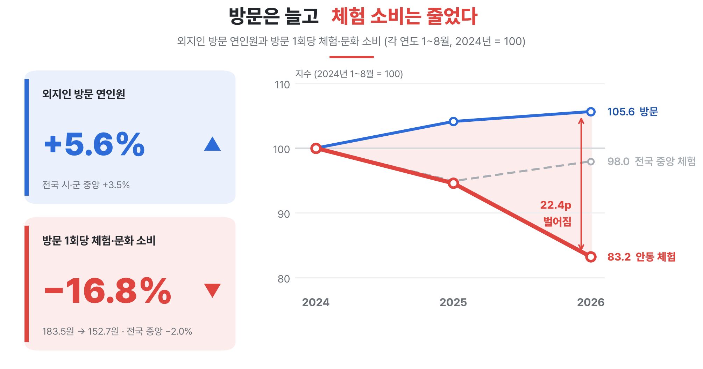
사람이 모이는 원도심엔 혜택이 없고, 19시 이후 월영교로 가는 길이 끊긴다
○ 만휴정·도산서원 방문객 절반 이상이 월영교로 모이지만, 반경 1km 음식점 16곳 중 13곳(81%)이 21시 전 식사 마감·주점 0곳
- 저녁 시간대 월영교 집결 비율 만휴정 54.8%, 도산서원 54.2%
- 21시까지 식사 가능 업소 3개소(18.8%), 주점 0개소(소비 전환 배율 0.40, 소비의 25.8% 편의점 집중)
- 원도심~월영교(3.2km) 시내버스(112번) 막차 18:45 종료, 19시 이후 야간 소비 연결 단절
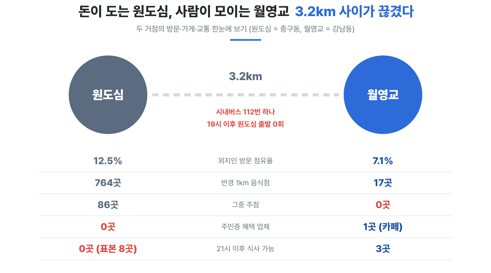
○ 21시 이후 야간 소비 단절 해소를 위한 데이터 기반 연계 프로그램 '안동 이어드림' 필요
- 쿠폰 나열식 정책으로 소상공인 참여·이용률 저조, 21시 이후 상권 마감 및 교통 단절로 야간 소비 유도 미흡
- 한국관광 데이터랩·설문조사(103명) 분석 결과 동선·시간대별 소비 공백 확인
- 원도심 식사 → 월영교 야간 이동 → 야간 팝업 체험의 3단계 연계
다음어디가, 언제 비어 있는지 데이터로 확인했다
빈 곳은 데이터로 찾고, 운영 시간과 장소도 데이터로 정했다
그림 3 · 읍면동 방문과 혜택 업체
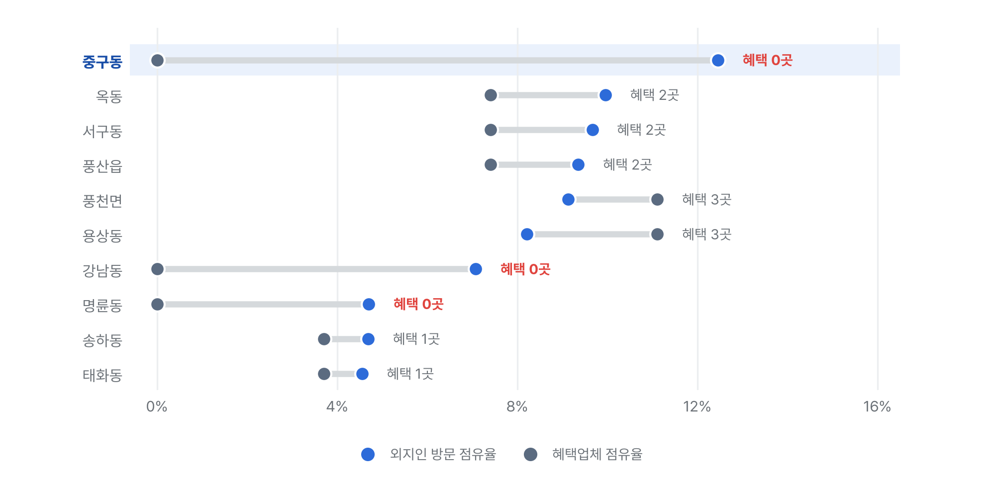
그림 4 · 112번 원도심–월영교 시간표
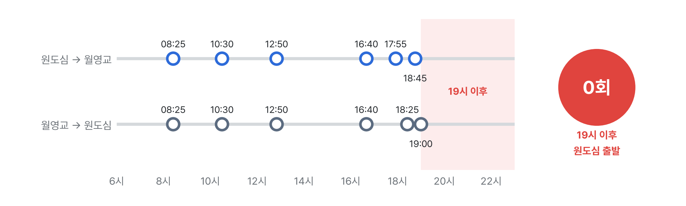
그림 5 · 월영교 1km 영업 종료 시각
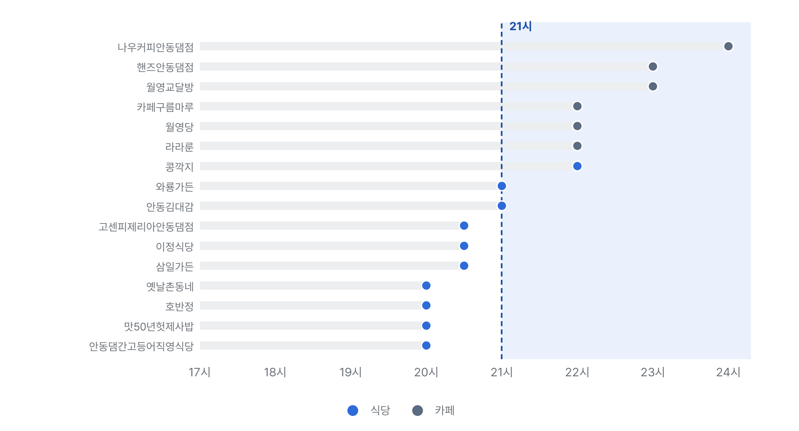
그림 6 · 참여율 효과 곡선
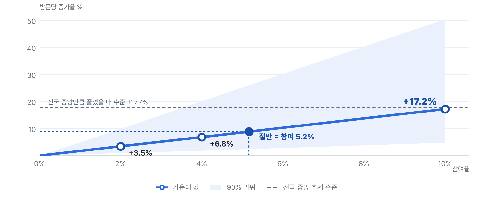
| 구분 | 활용 데이터 | 분석 방법 | 도출 결과 |
|---|---|---|---|
| 분석 1 | 데이터랩 읍면동별 외지인 방문 데이터 + 안동시 주민증 혜택업체 주소 데이터 | 매핑 분석 | 원도심(방문 1위 구역) 내 주민증 혜택 공백 파악 |
| 분석 2 | 코레일 안동역 시간대별 KTX 승하차 데이터 + 안동시 버스정보시스템(BIS) 노선 시간표 + 자체 설문 귀가 시각 | 시간대별 교통 공급·수요 교차 분석 | 야간 대중교통 단절 타깃 시간대(18:30~21:00) 도출 |
| 분석 3 | 소상공인시장진흥공단 안동시 상가업소 정보 + 현장 조사 월영교 반경 1km 영업 실태 | 상가업소 정보 및 현장 조사 교차 검증 | 21시 이후 식사 가능 업소 3개소 및 야간 인프라 부재 검증 |
| 분석 4 | 데이터랩 신용카드 관광소비 데이터 + 자체 설문 방문객 103명 이용 의향 조사 | 데이터 융합 후 1만 회 반복 모의실험(몬테카를로 기법) | 사업 성과의 정량적 예측 |
다음찾아낸 공백(원도심 혜택 · 18:30~21:00 · 월영교 21시 이후)을 3단계 릴레이의 장소와 시간으로 옮겼다
낮의 원도심에서 밤의 월영교까지 잇는다
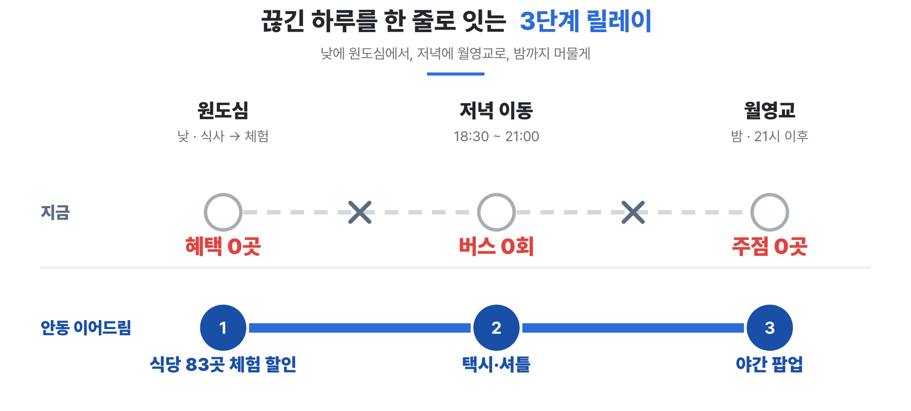
1단계 근거
○ 원도심(중구동) 외지인 방문 1위(점유율 12.5%, 음식점 764개소), 주민증 혜택업체 0개소
○ 체험 주저 이유의 83%가 가격이 아닌 정보·예약·이동 불편 → 즉시 발급·다중 경로 반영
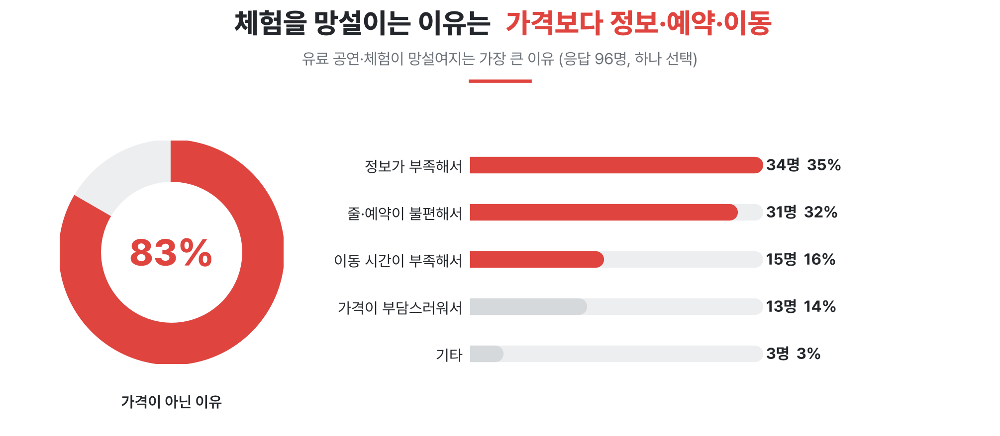
| 추진 내용 | ○ 원도심 관광식당 83개소(찜닭골목, 문화의거리 등) 방문객 대상 ○ 식사 후 관내 체험상품(한지, 안동소주, 전통주, 목공예 등) 10% 할인쿠폰 즉시 발급 ○ 참여 경로(3개): ① 영수증 QR 인증(주민증 없이 누구나 참여) ② 디지털관광주민증 제시(주민증 이용 실적 집계, 조건형 혜택 협의 중) ③ 식당 직원의 결제 시 직접 안내 |
|---|
2단계 근거
○ 월영교행 시내버스(112번) 막차 18:45 종료, 19시 이후 대중교통 0회
○ 안동역 KTX 막차(21~22시), 당일 귀가자 58%가 20~22시 귀가 → 동선 설계 반영
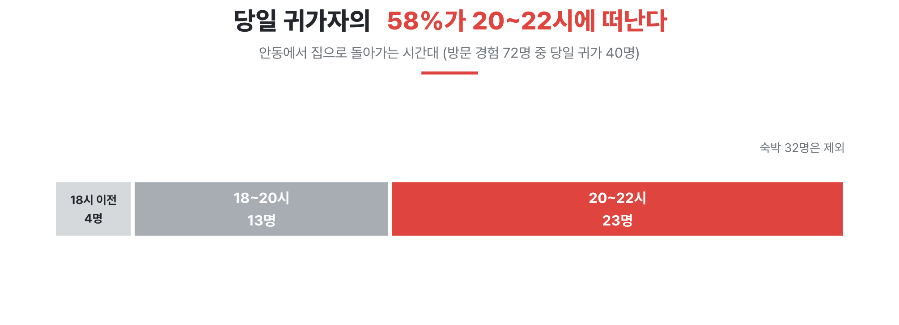
| 추진 내용 | ○ 대중교통 종료 시간대(18:30~21:00) 관광택시 저녁 배치 및 수요대응형 셔틀버스 운영 |
|---|
3단계 근거
○ 월영교 반경 1km 내 식당 16개소 중 21시까지 식사 가능 3개소(18.8%), 주점 0개소
○ 설문 응답자 53%가 20시 이후 주변 식당·편의시설 부족 지적 → 팝업스토어로 보완
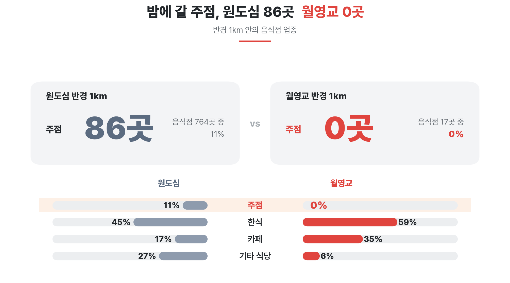
| 추진 내용 | ○ 월영교 도착 후 저녁 문보트 탑승(10% 할인) ○ 21시 이후 식사·주점 이용(월영야행 부지 팝업스토어 운영) 후 KTX·숙소 이동 |
|---|
링크https://andong-atlas-production.up.railway.app/
본 프로젝트는 데이터로 분석한 안동 관광의 소비 단절 문제를 해결하기 위해 '안동이어드림' 현장 모델을 3D로 구현했다. 다각도 및 1인칭 시점으로 프로세스를 시각화하여 데이터 기반 해결책의 현장 작동성을 직관적으로 검증하도록 설계했다.
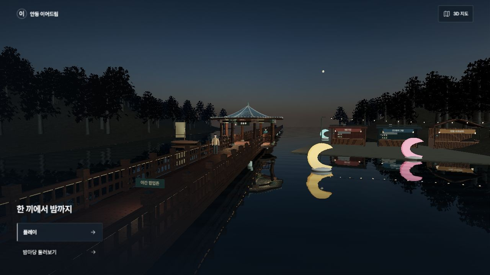
그림 11안동 이어드림 관광의 시작
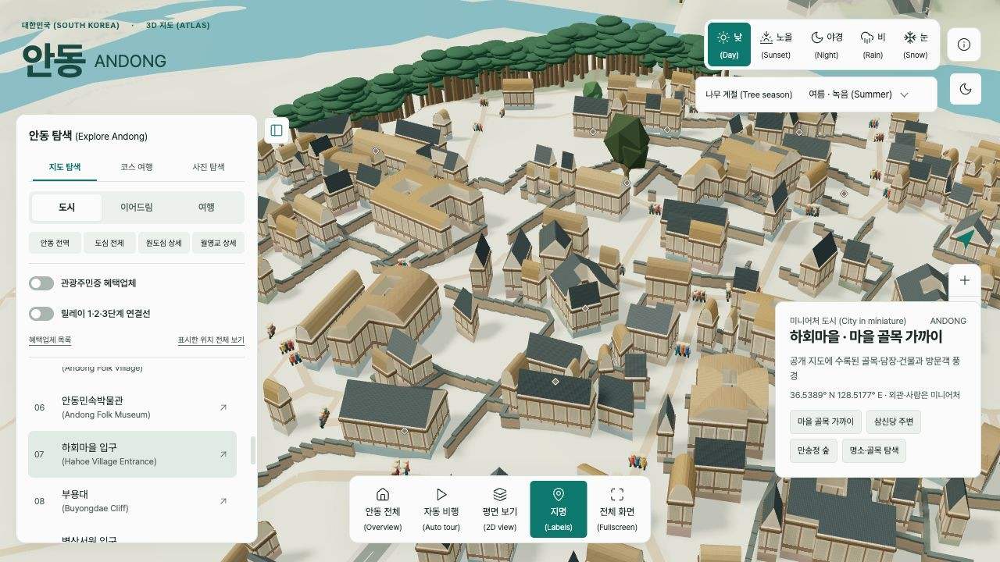
그림 12안동 도심 살펴보기
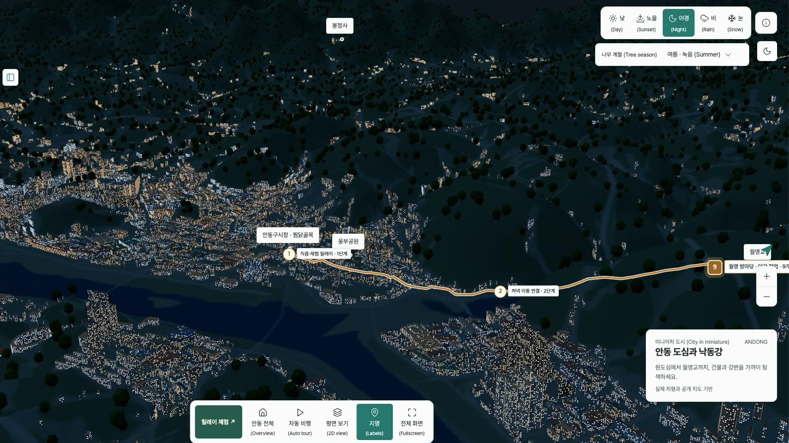
그림 13원도심에서 월영교까지 릴레이 동선(야경)
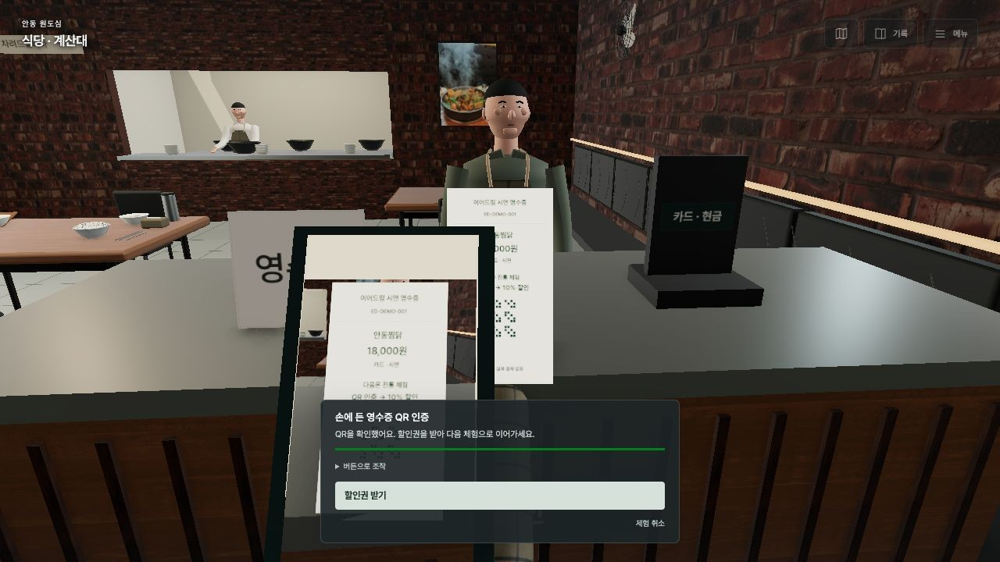
그림 14식사 후 영수증 QR 인증장면
그림 15안동 원도심 전통공방 탈 만들기 체험
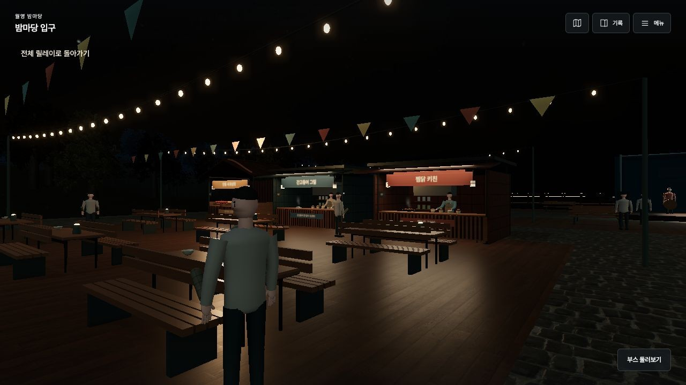
그림 16월영교 야간 팝업 「월영 밤마당」
다음이 릴레이를 시행하면 무엇이 달라지는지, 시행하기 전에 먼저 계산했다
시행하기 전에, 데이터로 먼저 계산했다
※ 본 성과는 한국관광 데이터랩 데이터 및 설문조사(103명) 자료를 바탕으로 모의실험(1만 회 반복 계산)을 통해 도출한 사업 추진 시 기대 정량 예측 수치임
○ 방문당 체험·문화 소비액 +3.5% 증가
- '안동 이어드림' 3단계 야간 릴레이 적용 시 방문 1회당 152.7원 → 158.0원(+3.5%), 목표 참여율 10% 달성 시 179.0원(+17.2%)으로 전국 중앙 추세 수준 회복
○ 원도심 혜택 가맹점 0개소 → 83개소 확대
- 체험 연결 인증 월 5,452건 예상, 주민증 월 이용 888건 → 약 1,150건(+30%) 증가 추산
○ 주말 저녁 월영교 유입 +110명 증가
- 19시 이후 대중교통 단절(0회) 보완으로 주말 하루 유입 110명, 야간 임시 매장 이용객 128명 창출
○ 지역 내 연간 순수 추가 소비 +1.56억 원 창출
- 지원금·기존 소비 대체분 제외 연간 1.56억 원 예측, 목표 참여율 10% 달성 시 6.91억 원 확대
| 지표 | 단위 | 지금 2026년 1~8월 | 시행 후 예측 (원도심 방문객 중 참여율) | ||
|---|---|---|---|---|---|
| 기준 2% | 흥행 4% | 목표 10% | |||
| 방문 1회당 체험·문화 소비 | 원 | 152.7 | 158.0 | 163.1 | 179.0 |
| 2024년 대비 변화 | % | −16.8 | −13.9 | −11.1 | −2.5 |
| 146개 시·군 중 감소폭 순위 | 위 | 22 | 27 | 38 | 71 |
| 월영교로 새로 가는 저녁 이동 (주말 하루) | 명 | - | 110 | 217 | 549 |
| 안동 추가 소비 (연간) | 억 원 | - | 1.56 | 2.86 | 6.91 |
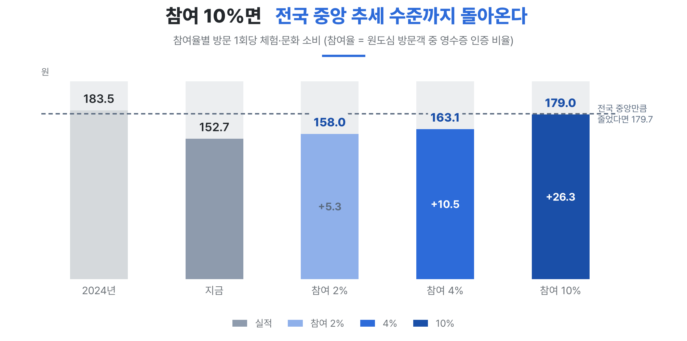
시행하면서 확인하고, 같은 문제를 가진 곳으로 넓힌다
○ 시범 운영 시 효과 확인 확률 85%
- 원도심 식당 83개소 5개월 시범 시 85% 확률 검증, 유사 지자체 6개소·주민증 운영 52개 지자체로 확산 기대
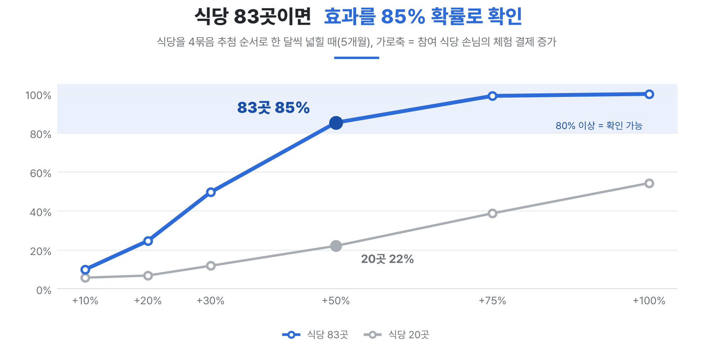
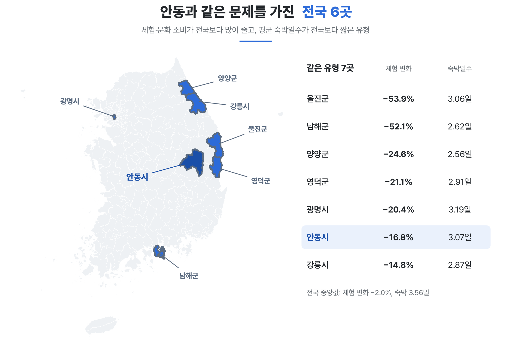
| 구분 | 세부내용 |
|---|---|
| 보고서명 | ▷ 데이터 기반 21시 이후 소비 릴레이 '안동 이어드림': 원도심에서 월영교로 (서식4 참고자료) |
| 작성주체 | ▷ 2026 한국관광 데이터랩 활용 경진대회 안동팀 |
| 구성 | ▷ 서식4 활용사례의 네 칸(1) 문제점 → 2) 데이터 활용 방안 → 3) 사업 개선·적용 → 4) 추진성과·기대효과) 순서. 칸마다 한 줄 메시지 → 서식4 문장 → 근거 그림 → 다음 칸으로 잇는 문장 |
| 작성방법 | ▷ 방문 1회당 소비 = 신용카드 외지인 소비 ÷ 이동통신 방문 연인원 (1인당 소비가 아님) ▷ 체험·문화 = 문화서비스 · 관광유원시설 · 기타레저. 안동 값은 전국 시·군 중앙값과 함께 표시 ▷ 기대효과 = 설문 의향 × 실현율(0.33~0.40)로 보정한 모의실험 1만 번의 가운데 값과 90% 범위 |
| 색 표시 | ▷ 줄었거나 없는 값(부정)은 빨강, 늘어난 값(긍정)은 파랑 |
| 유의사항 | ▷ 기대효과는 시행 전 예측이며 성과 실적이 아닙니다. 90% 범위는 신뢰구간이 아닙니다. ▷ 설문 의향 %는 참여율이 아닙니다. 순위 예측은 다른 시·군이 그대로일 때의 값입니다. ▷ 철도공사 8대 도시 자료는 데이터랩 수치와 체계가 달라 한 그림에 두지 않았습니다. |
| 제공 기관 | 자료 | 기간 · 코드 | 그림 |
|---|---|---|---|
| 한국관광 데이터랩 | 이동통신 방문 연인원 (시·군, 읍면동) | BDT_01_01_006 · 2024~2026년 1~8월 월별 | 123719 |
| 한국관광 데이터랩 | 신용카드 외지인 소비 (업종 중분류) | BDT_02_01_003 · 2024~2026년 1~8월 월별 | 119 |
| 한국관광 데이터랩 | 평균 숙박일수 | LN_02_01_013 (전국 진단표) | 19 |
| 안동시 정보공개청구 | 디지털 관광주민증 혜택업체 목록 · 업체별 이용 건수 | 목록 2026.9.18 · 이용 2024.6~2026.8 | 23 |
| 안동시 버스정보시스템(BIS) | 시내버스 112번 노선 시간표 | 평일 시간표 | 247 |
| 소상공인시장진흥공단 | 상가(상권)정보 | 2026.6 | 25710 |
| 안동팀 확인 | 지도 앱 영업시간 | 2026.9.19 | 25 |
| 안동팀 온라인 설문 | 응답 103명 (안동 방문 경험 72명) | 2026.9.23~24 | 89 |
| 안동팀 모의실험 | 이어드림 기대효과 모의실험 1만 번 | 시행 전 예측 · 원도심 식당 83곳 운영 · 연간 환산 | 617 |
| 안동팀 모의실험 | 순차 확대 검정력 1,000회 | 식당 4묶음, 한 달씩 5개월 | 18 |
| 안동팀 전국 진단표 | 144개 시·군 네 지표 진단 | 2026.9.23 | 19 |
| 안동팀 3D 웹 | 안동 이어드림 코스 3D 1인칭 체험 화면 | 2026.9.30 캡처 | 111213141516 |
※ 그림 번호는 이 보고서 안의 번호입니다. 그림의 숫자는 팀 분석 파일에서 자동으로 읽어 그렸고, 원자료 이용 조건은 각 제공 기관의 조건을 따릅니다.
※ 생성 코드: scripts/보고서그림.py, scripts/서식4흐름_보고서.py (공개 저장소 github.com/kysk2295/andong-datalab-2026)